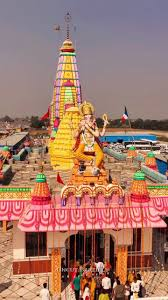

Manauna Dham, also known as Manona Dham, is a rapidly growing spiritual destination in Bareilly district, Uttar Pradesh. The temple is dedicated to Shri Khatu Shyam Ji and attracts thousands of devotees who come for darshan, aarti and blessings.
Main Entrance
Temple View

Mandir Complex
Darshan & Worship
Shri Khatu Shyam Ji
Devotees visit Manauna Dham to offer prayers and seek blessings from Shri Khatu Shyam Ji.
Mahant Shri Omendra Ji
Spiritual head associated with Manauna Dham and its daily religious activities.
Temple Interior
Peaceful darshan and aarti atmosphere inside the temple.